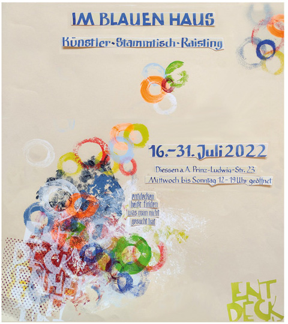

Die Vernissage findet am Samstag, den 16. Juli um 18 Uhr statt.
Die Ausstellung ist jeweils Mittwoch - Sonntag von 12 - 19 Uhr geöffnet. Die Künstler sind anwesend.

Die Künstlerinnen und Künstler sind am Samstag 26.06., Sonntag 27.06. und dann jeweils Mittwoch bis Sonntag von 12–19 Uhr anwesend. Eine Vernissage kann voraussichtlich nicht stattfinden.
Es gelten die vorgeschriebenen Infektionsschutzregeln. Weitere Informationen zur Ausstellung und den jeweils aktuellen Einlassregelungen finden Sie hier auf http://www.kuenstler-stammtisch-raisting.de.
Zusammen mit Künstlern aus der Raistinger Künstlergruppe stellt Christiane Burger Reliefs und Skulpturen zu dem Thema "Neubeginn" aus. Die Künstlerin hat auf der einen Seite den Gedanken verfolgt, dass man seinen alten Rahmen verlassen muss, um einen Neuanfang machen zu können. Auf der anderen Seite spürt sie H. Hesses Gedicht "Stufen" nach: "Und jedem Anfang wohnt ein Zauber inne, der uns beschützt und der uns hilft zu leben". Dabei stellt sie den "Zauber" in Frage, der laut Hesse " jedem Anfang inne wohnt".

Es ist spannend, wie diese Überlegungen dann letztendlich von der Künstlerin umgesetzt werden. Aber um das heraus zu finden, ist noch Geduld bis zur Kurz-Performance am 27. Juni 20 notwendig.

Vernissage und Ausstellung in Diessen a.A., Prinz-Ludwig-Str. 23

Vernissage & Ausstellung in Wilzhofen, Mühlenstrasse 9, 82407 Wilzhofen.
Vernissage & Ausstellung in der BVS-Bildungszentrum Holzhausen, Seeholzstraße 3, 86919 Utting am Ammersee
Vernissage mit Christine Burger am Donnerstag, den 3. Juli 2014 ab 19 Uhr.
Ausstellung vom 3. Juli bis Sonntag 27. Juli 2014, täglich von 11 Uhr bis 17 Uhr geöffnet
Vernissage & Ausstellung in der "Galerie auf Zeit" in Weilheim, Münchner Strasse 7
Vernissage mit Christine Burger am Freitag, den 8. Juni 2012 um 19 Uhr.
Ausstellung vom 8. Juni bis 8. Juli 2012, Mittwoch bis Sonntag von 15-18 Uhr
in der Galerie im Augustinum in Diessen am Ammersee, Am Augustinerberg 1, Diessen
Ausstellung vom 14. Oktober bis 21. November 2011
Vernissage am Freitag, 14. Oktober 2011 um 19 Uhr
Dem "TANZENDEN LEBEN" widmet sich die Künstlerin Christiane Burger aus Raisting in ihren Skulpturen und neuesten WAND - ENGOBEN, die aus fein modellierten Keramikreliefs bestehen und mit flüssigen, verschieden aufgetragenen Tonzusammensetzungen durch hoch temperiertes Brennen ihre typische Farbigkeit erhalten. Diese Tonfarben, im Fachjargon Engoben genannt, unterstreichen das grundsätzlich Lebendige dieses Themas und sind eine gelungene Ergänzung zur symbolorientierten, gut verständlichen Formensprache der Künstlerin. Inhaltlich geht es von den nötigen IM-PULSEN, die jeder in seinem Leben braucht, bis zu den vielen unterschiedlichen Momenten, die das LEBEN zum TANZEN bringen.


in Form von keramischen Wandobjekten visualisiert
Austellung vom 19. November 2009 -bis 02. Januar 2010
Vernissage am 19. November 18 Uhr
Ausstellung vom 19. Oktober 2008 bis 8. März 2009
Vernissage am 19. Oktober
Alle drei Jahre schreibt das Handwerksmuseum Deggendorf einen Wettbewerb zu einem Alltagsgegenstand aus. Das diesjährige Wettbewerbsthema lautet die „Krawatte und Krawattennadel“.
Christiane Burger hat es durch die Vorauswahl in die Ausstellung geschafft! Sie präsentiert dort die drei Krawatten "Klassik-Flexibel".


Fotografiert von Alexander Göttert, genäht im Nähstudio Veronika Heumos.
Ausstellung vom 1. Juli bis 30. September 2007
Vernissage am 1. Juli 17 Uhr
vom 17.11. bis zum 23.12.2006
Momente in Ton und Momente in Bild fügt Christiane Burger in ihrem Altelier in Raisting zu einer ideenreichen Ausstellung zusammen. Sie hat zur Winterausstellung den 29 jährigen Fotografen und Kameramann aus München eingeladen: Alexander Göttert beschäftigt sich seit 15 Jahren mit Film und Fotografie, seine Momente sind aus Florenz und stammen aus einer Serie freier Arbeiten.

Vom 24.11. bis 23.12.2005 waren wir mit CB ARTS am TOLLWOOD.
Es war eine sehr anstrengende Zeit voller interessanter Erfahrungen und auch viel positivem Feedback.